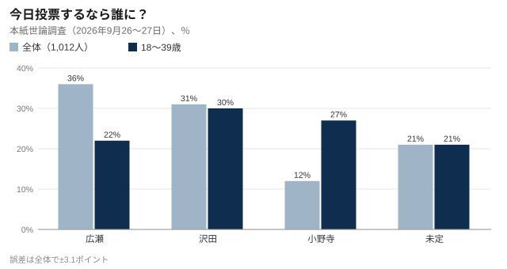
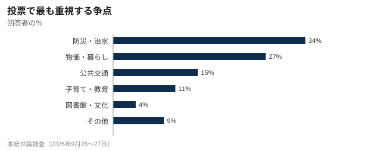

市長選 広瀬氏が5ポイントリード、2割が態度未定 本紙世論調査
11月8日投開票の春川市長選について本紙が1,012人に聞いた世論調査で、3選を目指す広瀬拓也市長が沢田美智子氏を5ポイント上回った。ただ40歳未満では沢田氏が首位。投票で最も重視する争点は防災・治水だった。

11月8日投開票の春川市長選を前に、春川日報は9月26、27の両日、市内の有権者を対象に電話世論調査を行った。「今日投票するなら誰に入れるか」との問いに、3選を目指す現職の広瀬拓也氏（63）を挙げた人が36%で最も多く、元県議の沢田美智子氏（55）が31%、元ソフトウェア会社管理職で初挑戦の小野寺亮氏（42）が12%で続いた。「まだ決めていない」は21%だった。
広瀬氏のリードは調査の誤差（±3.1ポイント）を上回るが、有権者の5人に1人が態度を決めておらず、告示（11月1日）前の現時点では情勢は流動的だ。

若い世代では様相一変
18〜39歳に限ると構図は大きく変わる。沢田氏が30%で首位に立ち、小野寺氏が27%で続き、広瀬氏は22%で3番手。未定は全体と同じ21%だった。
広瀬氏のリードは投票率の高い高齢層に支えられている。カギを握るのは小野寺氏だ。40歳未満の4分の1を保てば、沢田氏が必要とする票を奪うことになる。
春川大学 黒木麻衣准教授（政治学）
政党や会派の支援を受けていない小野寺氏は主にネットで活動し、2028年までに市の全手続きをオンライン化することや、市長給与の3割削減を訴えている。
争点は「防災」、次いで「暮らし」
投票で最も重視する争点を一つ選んでもらったところ、「防災・治水」が34%で最多。「物価・暮らし」27%、「公共交通」15%、「子育て・教育」11%、「図書館・文化」4%と続き、「その他」は9%だった。

鏡川が下川端であふれ、住宅1,140戸が浸水した2021年9月の水害は、今も市政に影を落とす。防災・治水を最重視する層では広瀬氏が44%、沢田氏が29%。公共交通を挙げた層では沢田氏が47%で首位だった。
沢田氏は交通費の負担も争点に掲げ、70歳以上の市民のハルカ運賃を市の負担で半額にすると公約している。広瀬氏の陣営は、財源の裏付けがないと批判する。
立候補予定者
3氏はいずれも無所属で立候補を表明している。広瀬氏は市議会の2大会派「市政クラブ」と「みらい春川」が、沢田氏は「鏡市民ネット」が支援する。
| 氏名 | 年齢 | 経歴 | 支援 | 主な公約 |
|---|---|---|---|---|
| 広瀬拓也 | 63 | 2018年から市長（2期）。それ以前は市職員を28年 | 無所属。市議会会派「市政クラブ」「みらい春川」が支援 | 堤防強化と下川端ポンプ場の完成、新図書館の開館、みのり港への投資誘致 |
| 沢田美智子 | 55 | みのり県議を2011〜2023年に3期 | 無所属。「鏡市民ネット」が支援 | 70歳以上の市民のハルカ運賃を市の負担で半額に、学校給食の無償化、水道料金値上げの見直し |
| 小野寺亮 | 42 | ソフトウェア会社の元管理職。初挑戦 | 無所属。組織的な支援なし | 2028年までに市の手続きをすべてオンライン化、市長給与3割削減、旧市街の再生 |
告示は11月1日、期日前投票は11月2〜7日（市役所と5支所）
5週間は長い。まだ何も決まっていないという戒めと受け止め、鏡川で取り組んできたことを引き続き説明していく。
広瀬拓也氏
5ポイント差で2割が未定なら勝てる選挙だ。運賃も水道料金もよそ事のように扱われることに、市民はうんざりしている。
沢田美智子氏
小野寺氏は「若い世代の4分の1が、おなじみの2人とは違う選択肢を求めていることが示された」と話した。
投票率と日程
前回2022年の市長選で広瀬氏は8万1,430票を得て再選された。投票率は41.8%だった。今回の有権者数は約34万5千人。告示は11月1日で、期日前投票は11月2〜7日に市役所と5支所で受け付ける。
本紙は10月22日（木）午後7時から、春川市民会館で3氏による公開討論会を開く。入場無料で、本紙サイトでも中継する。
市議会は本日30日、沢田氏が批判する9月補正予算案と水道料金の値上げ案を採決する。


コメント 5
旧市街の有権者
未定の21%は私です。広瀬さんは川の工事を進めたけど図書館にはお金がかかりすぎ。沢田さんはハルカ半額と言うけど財源は？
みゆK
40歳未満の数字が出たのは良かった。ネットのことを話しているのは小野寺さんだけ。職場はみんな小野寺さんに入れると言ってます。
城山シニア
電話調査は知らない番号に出る人にしか届かない。若い人はあまり出ないから、27%は割り引いて見た方がいい。
治水が第一
防災が34%は当然。2021年を経験した人は、それだけで投票先を決めます。
中野H
回答者数の訂正、ありがとうございます。1,012と1,102で結論は変わらないけど、直してくれるのは良いこと。